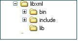

2. Installing and Running on Microsoft Windows
This too can be done using binary or source distributions. (Download the two distributions.)
For both binary and source distributions, you have to download Libxml2, if you are not using Guththila parser which comes with the distribution.
2.1.1. Requirements
- The binaries shipped with this version are compiled with the Microsoft Visual Studio compiler (cl)
- You also need the following DLLs:
- libxml2.dll [http://www.zlatkovic.com/pub/libxml/ - download the version >= libxml2-2.6.27.win32] (optional - required only if you are not using Guththila parser)
- iconv.dll [http://www.zlatkovic.com/pub/libxml/ - download the version >= iconv-1.9.1.win32]
- zlib1.dll [http://www.zlatkovic.com/pub/libxml/ - download the version >= zlib-1.2.3.win32]
(Note: you can download the Microsoft VSExpress2005 edition from the Microsoft Web site and install it to run these binaries.)
2.1.2. Binaries in the Release
- Extract the binary distribution to a folder of your choice. (example: C:\axis2c)
- The C:\axis2c folder structure is as follows:
- bin - server and other executables
- bin\samples - client samples
- lib - library modules
- services - deployed services
- modules - deployed modules
- include - all Include files of Axis2/C
- logs - system and client logs are written to this folder
- Copy libxml2.dll, iconv.dll, and zlib1.dll downloaded to C:\axis2c\lib

The above folders contain the following files:
2.1.3. Running the Binaries
- First, you need to set a couple of environment variables before you can
run the server and samples.
- Set the variable AXIS2C_HOME to the deploy folder (C:\axis2c)
- Add the path to the lib directory to the PATH variable (%AXIS2C_HOME%\lib)
- Now everything is set to run the server.
C:\axis2c\bin\>axis2_http_server.exe
- If the server is running successfully, you will see the message "Started Simple Axis2 HTTP Server..."
- By default, the log is created in the %AXIS2C_HOME%\logs folder with the name axis2.log.
- (Note: You can provide command line options to change
the default behavior. Use the command
axis2_http_server.exe -hto learn about the usage) - Now you can run any sample client located in %AXIS2C_HOME%\bin\samples\
- Example: C:\axis2c\bin\samples\> echo.exe
2.2.1. Requirements
- The makefile shipped with this version needs Microsoft Visual Studio Compiler (cl) and the NMake build tool.
- You also need
- libxml2 [http://www.zlatkovic.com/pub/libxml/ - download the version >= libxml2-2.6.27.win32] (optional - required only if you are not using Guththila parser)
- iconv [http://www.zlatkovic.com/pub/libxml/ - download the version >= iconv-1.9.1.win32]
- zlib [http://www.zlatkovic.com/pub/libxml/ - download the version >= zlib-1.2.3.win32]
(Note: You can download the Microsoft VSExpress2005 edition and Platform SDK from the Microsoft Web site. You will need to add the path to the Platform SDK Include and Lib folders to the makefile)
2.2.2. Editing the configure.in File
Please edit the <source_distribution>\build\win32\configure.in file to include the following information.
The paths for the following required external libraries are specified in configure.in. Please note that you need to specify the path to the extracted folder.
- libxml2 (required if you are not using Guththila) [LIBXML2_BIN_DIR]
- iconv [ICONV_BIN_DIR]
- zlib [ZLIB_BIN_DIR]
The default paths for these external libraries are already specified in configure.in file.
Example: If libxml2 is installed into C:\libxml2, edit the
configure.in file accordingly.
You can either extract libxml2 to this folder, in which case the folder
structure for C:\libxml2 should look like the following:

Else, extract it to a location of your choice and edit the configure.in
file accordingly.
If you need the parser to use Guththila XML parser, set the
ENABLE_GUTHTHILA option to 1 in configure.in
file.
Example: ENABLE_GUTHTHILA = 1
Other options available:
If you want to enable SSL client support, set ENABLE_SSL to 1 and set the path where OpenSSL is installed to OPENSSL_BIN_DIR.
If you want to enable libcurl based client transport, set ENABLE_LIBCURL to 1 and set the path where libcurl is installed to LIBCURL_BIN_DIR.
2.2.3. Compiling the Source
The following steps will take you through the source compilation.
- Extract the source distribution to a folder of your choice. (Example: C:\axis2c)
- Edit the configure.in file as explained in the section 2.2.3
- Open a DOS shell
cd C:\axis2c\build\win32- to access .Net tools, run
- C:\axis2c\build\win32> vcvars32.bat
(Note: You may have to set the PATH environment variable to vcvars32.bat if MS Windows gives an error indicating that it cannot find this batch file. This file is located in <your MS Visual Studio install Directory>\VC\bin directory.)
- To build the system and create the binary files in a directory named
deploy under the build directory,
- C:\axis2c\build\win32>nmake install
- The deploy folder structure is as follows:
- bin - server and other executable
- bin\samples - client samples
- lib - library modules
- services - deployed services
- modules - deployed modules
- include - all include files of Axis2 C
- logs - system and client logs are written to this folder

The above folders contain the following files:
Please note that nmake install does not build the apache or the IIS module. Refer to Axis2/C manual to see how to install these modules.
2.2.4. Running the Binaries
- You need to set a couple of environment variables before you can run
the server and samples.
- Set the variable AXIS2C_HOME to the deploy folder (C:\axis2c\build\deploy)
- Add the path to the lib directory to the PATH variable (%AXIS2C_HOME%\lib)
- Copy libxml2.dll, iconv.dll and zlib1.dll to Axis2/C lib folder (%AXIS2C_HOME%\lib)
- Now run the server - C:\axis2c\build\deploy\bin> axis2_http_server.exe
- If the server is running successfully, you will see the message "Started Simple Axis2 HTTP Server..."
- By default, the log is created under the %AXIS2C_HOME%\logs folder with the name axis2.log.
- (Note: You can provide command line options to change the default behavior. Use the command "axis2_http_server.exe -h" to learn about the usage)
- Now you can run any sample client deployed under
%AXIS2C_HOME%\bin\samples\
- Example: C:\axis2c\build\deploy\bin\samples> echo.exe